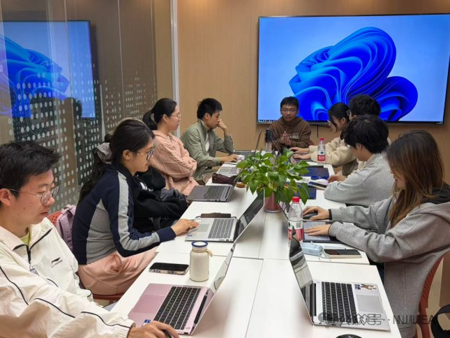
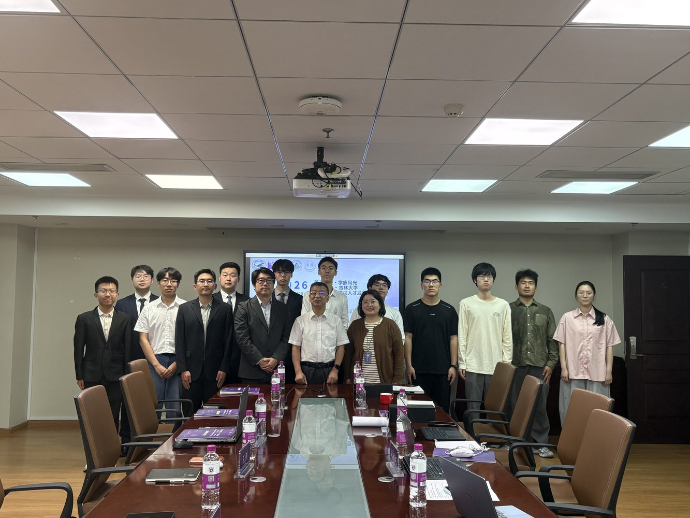
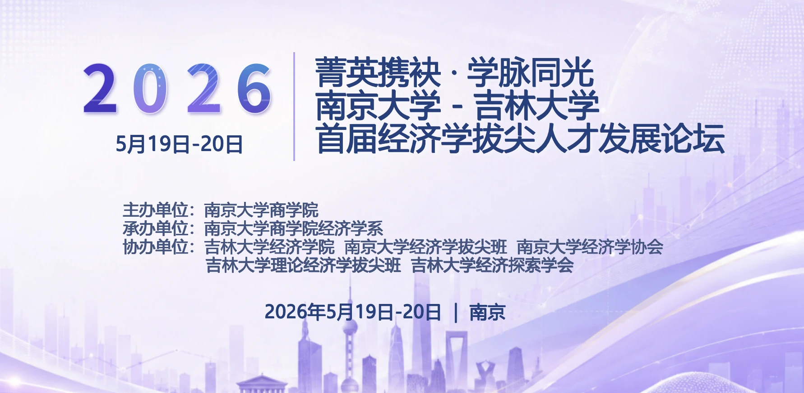
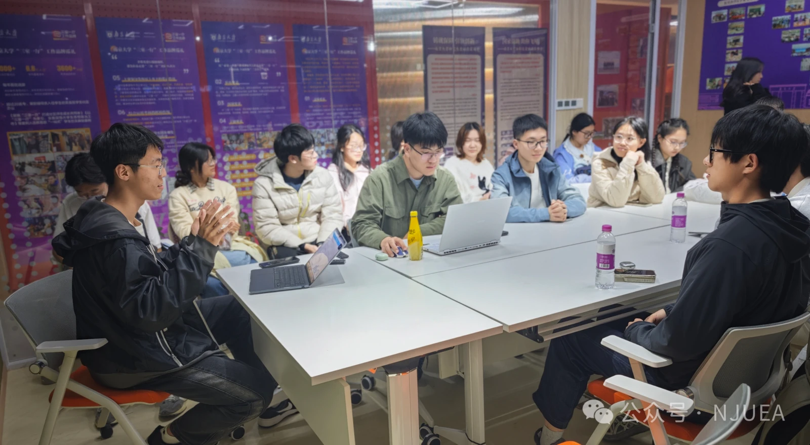

Nanjing University Economic Association
南京大学经济学协会
经观时代万象，协聚南大青年。
- 协会成员
- 47位
- 其中12位成员担任朋辈导师
- 学术组会
- 11期
- 2026年春季8期、秋季3期
- 银星杯获奖论文
- 8篇
- 一等奖3篇，其中1篇获最佳论文奖
- 校际论坛
- 2校
- 首届论坛由南京大学、吉林大学合办
What we do
我们在做什么
Peer mentoring
朋辈导师计划
12位导师26位结对学生新成员可以按研究兴趣与朋辈 Mentor 组成小组。从读懂第一篇论文、寻找数据，到选课和升学，遇到具体问题就有一位熟悉这个方向的同学可以商量。
Across campuses
校际交流
我们与吉林大学经济探索学会合办了首届经济学拔尖人才发展论坛。两校学生在南京报告自己的论文，听老师点评，也交换各自组织研究小组的经验。

Research clubs
经问工坊
在经问工坊，成员可以发起课题、招募队友。一个生活中的观察、一组值得追问的数据，或一个想检验的猜想，都可以成为大家一起研究的起点。
News & events
社团大事

南京大学—吉林大学
首届经济学拔尖人才发展论坛
菁英携袂，学脉同光。两校师生相聚南京，在论文报告、学术点评与交流中，分享研究发现，拓展彼此的经济学视野。

2026年度协会会员大会
从一次相聚，走向更多同行。会员们围坐交流，在相互认识中联结彼此，让共同的学术兴趣成为日后交流与合作的起点。
Our people
成员与导师
陈子扬
指导老师南京大学经济学系 · 特任副研究员
城市经济学、房地产金融、发展经济学、政治经济学
李金泽
会长2024级 · 经济学（拔尖计划）
城市与房地产经济学
刘棣文
会长2023级 · 经济学（拔尖计划）
数字经济学、政策效应评估
张宸奕
副会长2025级 · 经济学（拔尖计划）
劳动经济学、教育经济学、公共经济学
李奕贤
副会长2025级 · 金融工程
投资组合优化、机器学习与量化风控
周凤仪
协会成员2023级 · 经济学
产业经济学
桂宇河
朋辈 Mentor2023级 · 经济学（拔尖计划）
产业经济学
刘君阳
协会成员2024级 · 经济学（拔尖计划）
行为经济学
张凯瑞
朋辈 Mentor2024级 · 经济学
行为经济学
王益宁
朋辈 Mentor2024级 · 金融学
应用经济学
任旭泽
朋辈 Mentor2024级 · 经济学（拔尖计划）
数字经济学
戴李洋
协会成员2025级 · 保险学
行为保险经济学、产业经济学、劳动经济学
邢文青
朋辈 Mentor2023级 · 金融学
金融学
柴森叶
朋辈 Mentor2024级 · 经济学（拔尖计划）
产业经济学
陈逸铭
协会成员2025级 · 数字经济学
产业经济学
苏会然
协会成员2024级 · 国际经济与贸易
发展经济学
周博文
协会成员2023级 · 保险学
劳动经济学
赵晨希
协会成员2023级 · 产业经济学
劳动经济学、健康经济学、发展经济学
王思雅
朋辈 Mentor2024级 · 产业经济学
产业经济学
陈子鸿
协会成员2024级 · 国际经济与贸易
国际贸易、国际投资、发展经济学
刘子萌
协会成员2025级 · 金融学
金融学、行为经济学
宫之涵
协会成员2025级 · 经济学
胡梓林
协会成员2025级 · 经济学
区域经济学、经济史
冯思阳
协会成员2025级 · 经济学（拔尖计划）
区域经济学、人口流动与区域协调
管佘诗佳
协会成员2025级 · 经济学
神经经济学、行为经济学
时艺菲
协会成员2025级 · 朝鲜语
产业经济学、国际贸易
周讯婕
协会成员2025级 · 国际经济与贸易
普惠金融、国际贸易
张智杰
协会成员2025级 · 电子商务
数字经济、乡村振兴
张徛翔
协会成员2025级 · 经济学（拔尖计划）
区域经济学、交通运输经济学
张欣晟
协会成员2025级 · 保险学
金融学
胡凯文
协会成员2025级 · 经济学（拔尖计划）
消费者行为经济学、平台经济
赵翌涵
协会成员2025级 · 经济学（拔尖计划）
经济史、财政学
夏涛
朋辈 Mentor2026级硕士 · 西方经济学
经济史、制度经济学、宏观经济学
郑斯可
协会成员严欣语
协会成员2025级 · 经济学
数字经济学、行为经济学
许彧凡
协会成员2025级 · 经济与金融
金融分析、企业信息与资本市场
黄闵宇
协会成员2025级 · 数字经济学
产业经济学、金融学
叶骐丞
协会成员姚璇
协会成员2026级 · 德语
行为经济学、国际贸易与商务
李彦谷
协会成员2026级 · 经济管理试验班
区域经济学
何致贤
协会成员2026级 · 人文科学试验班
城市空间与职住分离
张良哲
协会成员2026级 · 经济管理试验班
产业经济、宏观经济
高佳阳
协会成员戴宁毓
协会成员2025级 · 金融工程
人工智能在金融分析中的应用
沈佳圆
协会成员2025级 · 国际经济与贸易
数字经济学、国际贸易学
周元昊
协会成员2021级 · 统计学
经济史
林婧雯
协会成员2026级 · 经济学（拔尖计划）
产业经济学
李佳阳
协会成员2026级 · 经济学（拔尖计划）
应用经济学